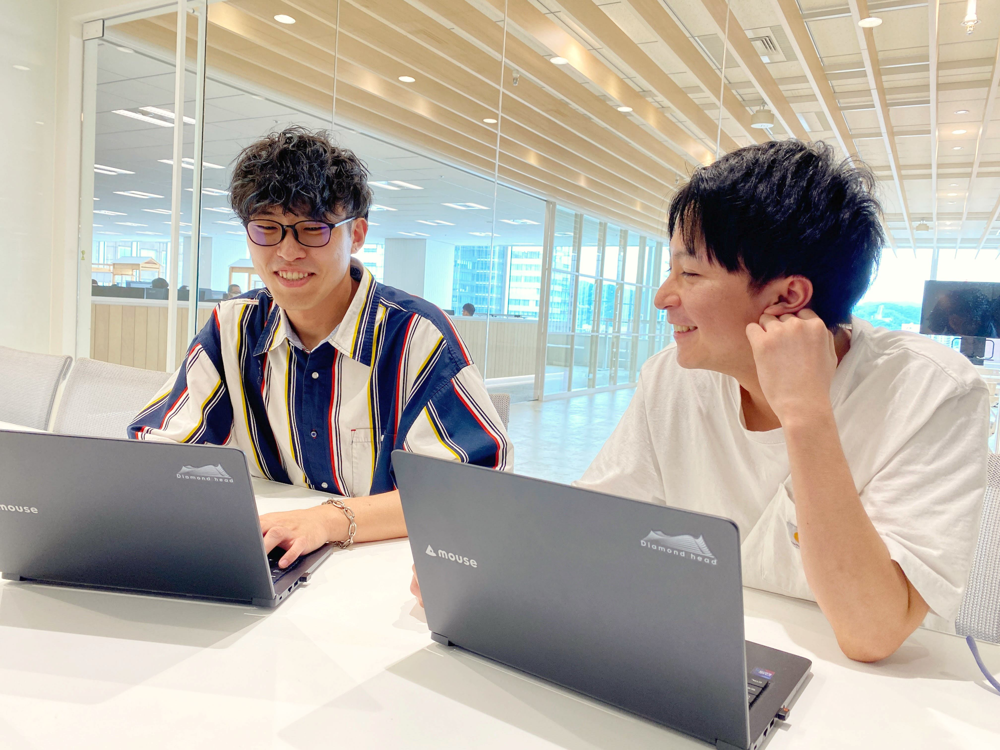

LONG-TERM INTERNSHIP
長期インターンシップ
実務型の長期インターンシップ
ダイアモンドヘッドでは通年で長期インターンシップの受け入れを行っています。
インターン生の皆さんには、実際の開発現場で社員と共に業務に携わっていただき、実務を通じたスキルの習得を目指していただきます。
学んだ知識を
実務で活かしたい
将来のキャリア選択の
参考にしたい
スキルアップしてから
新卒選考に進みたい
インターンの期間・勤務時間
開始日やインターン期間、勤務時間（シフト）については、ご自身のスケジュールに合わせて調整いただいたうえでご応募いただけます。
ただし、インターン生の皆さまに十分な実務経験を積んでいただくことを重視しており、3週間以上かつ週3日以上の参加を条件としています。
※講義や授業の無い長期休暇期間に参加する方が多いです。
募集要項
実務を通じてエンジニアとしてのスキルアップを目指せる環境です。要件をご確認の上、ぜひご応募ください。

※詳しいプログラム内容はページ下部的「就業内容」をご確認ください。
- 30才未満で学校機関に在籍中の方（高校生不可）
- 3週間以上、8週間以下の参加
- 週3日以上の参加
時給 1,200円
以下は、情報・工学・数理系などIT技術を扱う大学院に進学している方の条件です。
・修士課程：時給 1,400円
・博士課程：時給 1,600円
北海道札幌市中央区北１条西１丁目 6 さっぽろ創世スクエア14階（地下鉄大通駅直結）
※遠方から対面参加される方にはフライト代やホテル滞在費用の補助費支給があります。
（条件あり。詳細はページ下部「注意事項」の契約に関する項目をご参照ください。）
※1日の参加上限は7.5時間です。
※基本はフルタイムですが、学校の予定や都合に合わせて調整可能です。
就業内容
以下の4つのプログラムからご希望や適性に合わせてお選びいただけます。
1. EC支援システム開発
（バックエンド開発）
Python/Djangoを用いたEC支援システム（商品・在庫管理等）のバックエンド開発に携わります。実際のチームに加わり、実務を通じてモダンなスタックに触れられます。
詳細を見る2. ECサイト開発
（フロントエンド開発）
公式ストア（フロントエンド）開発を担当。HTML/CSSのデザイン修正からPHP/Laravelを用いた機能改善まで、実現場に近いスピード感を体験します。
詳細を見る1日の流れの一例
開発チームに所属してもらい、社員と同じ1日を通しで体験します。出社して朝のデイリーミーティングから定時まで一緒に仕事を進めます。
出社
朝会
その日に取り組むタスクの共有と認識合わせを行います。
昼休み
近くのコンビニや、創世スクエア・周辺の飲食店でランチをとります。
午後の業務開始
週次ミーティング・プルリク共有会
週次の振り返りや、コードのプルリクエストのレビュー・共有を行います。
夕会
進捗の共有と、翌日取り組むタスクの整理・確認を行います。
片付け
デスクや貸与ノートPCの片付けを行います。
退勤
参加にあたっての注意事項
他社就業について
労働基準法による労働時間の把握に基づく対応のため、インターンシップ参加期間中は週5日を越えた労働およびに週40時間以上の労働は出来ません（アルバイト先の退職は必要ありません）。
コンプライアンス上の理由により、原則としてインターンシップ参加期間中は他社就業は出来ません（所属学校法人および自身が代表権を保有している企業は除く）。
大学内での教授のお手伝いなど学業上やむえない理由で就業されている方は、理由を確認の上で就業可否を判断します。
終了条件について
退学や大学卒業などにより学籍を離れた方、卒業・修了見込みが無くなった方はインターンシップを継続できないものとし参加終了となります（満期退学を除く）。
インターンシップ参加中に、インターンシップ応募時の回答または面接時に会話したインターンシップへの参加目的および活動との相違が認められた場合, インターンシップを継続できないものとし参加終了となります。
勤怠管理が不十分な場合、業務の遂行が困難であると判断された場合はインターンシップを継続できないものとし参加終了となります。
契約期間について
8週間以上の参加を希望される方について、手続きの都合上、一度の契約期間を8週間としています。その後の延長については入社後に、受け入れ状況や業務内容を鑑みて担当から相談させていただきます。
外国人留学生の就労時間制限について
外国人留学生の方は週28時間を超えてのインターンシップ参加（就労）ができません。ご注意ください。ただし、学校が発行した長期休暇の証明書があれば、その期間内でのみ、週28時間を超えた就労が可能です。
インターン応募フロー
会社を知る
ITエンジニア職説明会に参加する
スケジュールを決める
インターンシップ応募前に下記の内容をざっくり決めておきます
・希望開始日 / 終了日
・勤務時間（期間中のシフト）
・就業内容
※選考や手続きに時間がかかりますので希望開始日は3週間以上先をご指定ください
応募
長期インターン応募フォームに回答する（Googleフォームが開きます）
※応募フォームの回答送信をもって応募完了となります
※マイナビなどの求人媒体からエントリーされた方も応募フォームへご回答下さい
選考
選考は2回あります
① 応募フォーム選考
② オンラインインタビュー選考（インタビュー形式の面談）
受け入れ
受け入れが確定しましたら入社手続きに移行します
・参加日程の調整や事務手続き
・事前に学習しておくと役立つ内容のご連絡
※契約は全て電子契約で行います。書類をご準備いただく必要はございません。